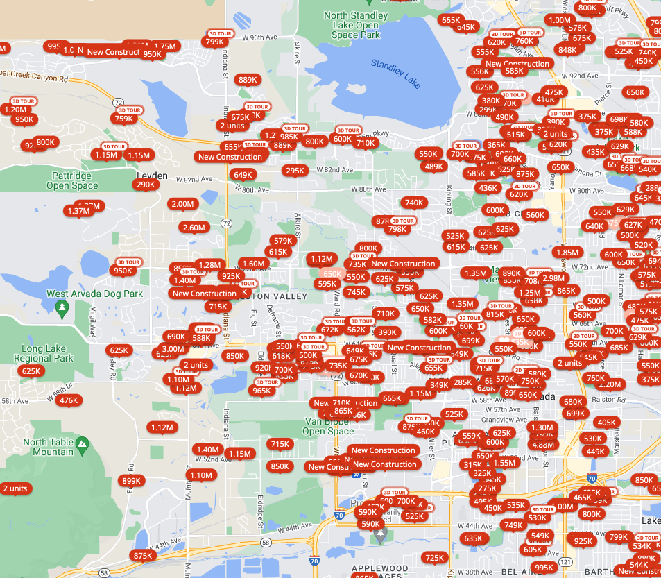
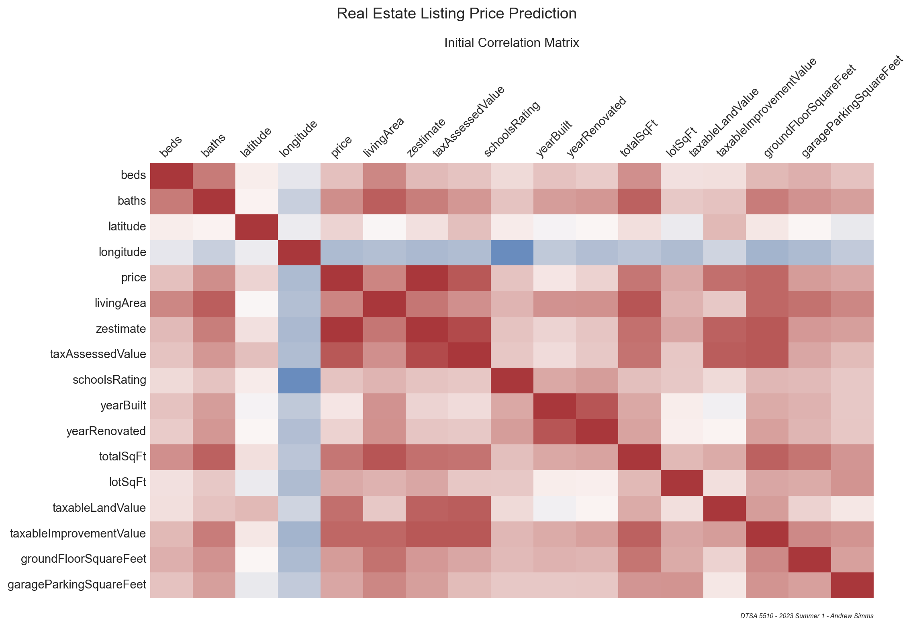
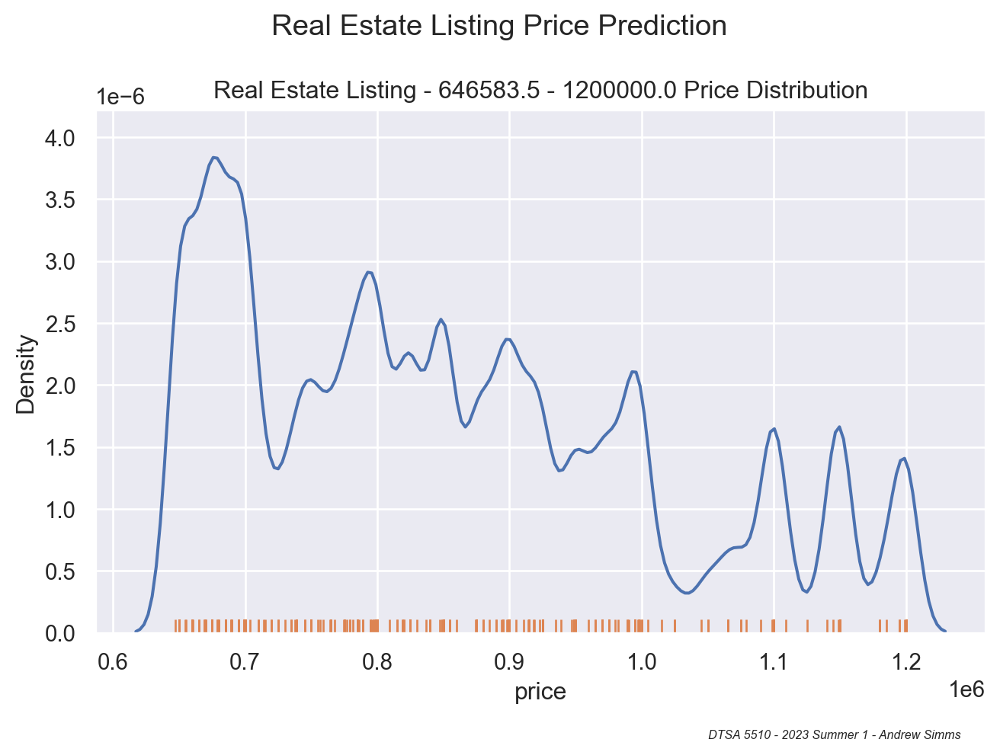
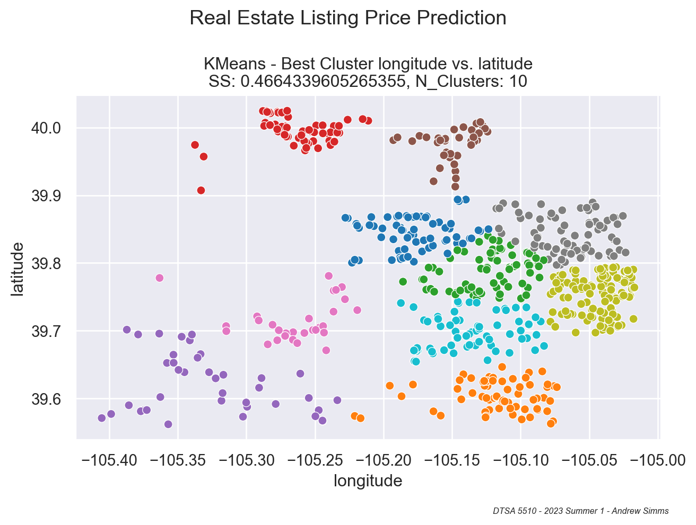
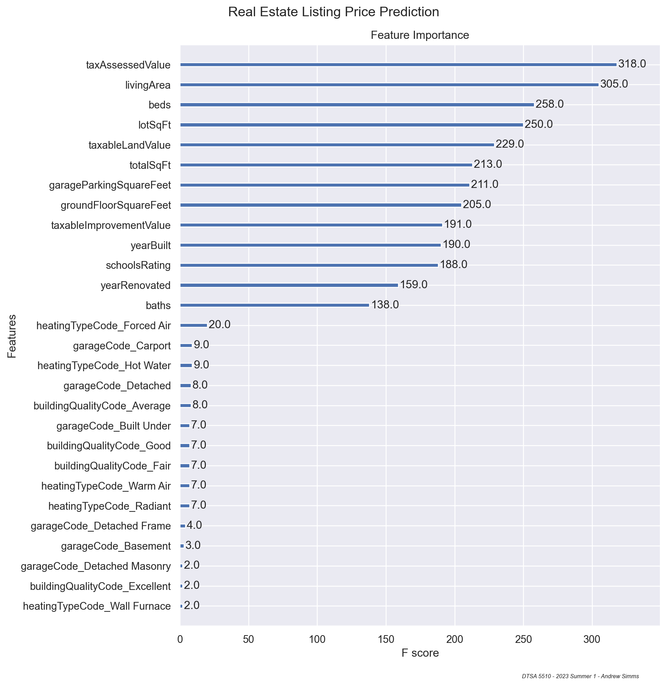
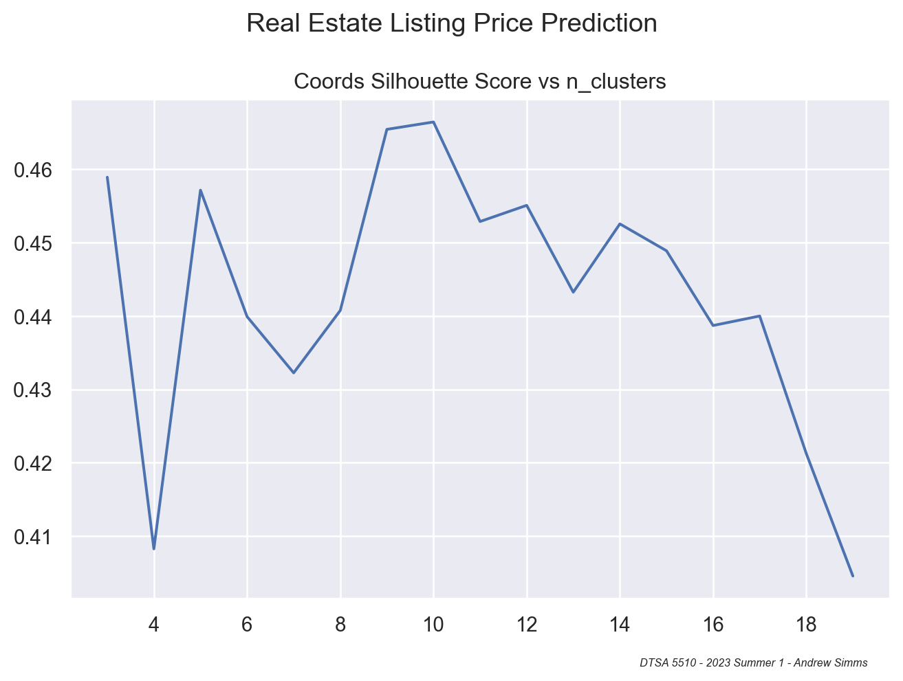
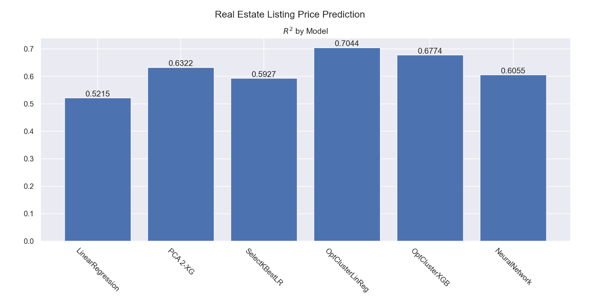
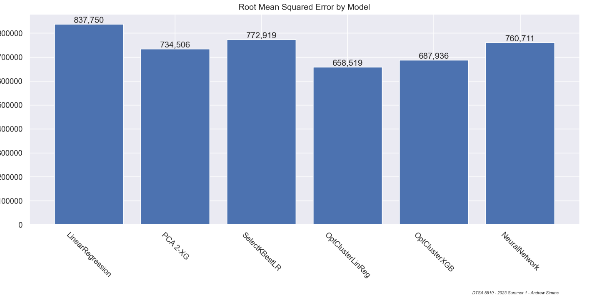
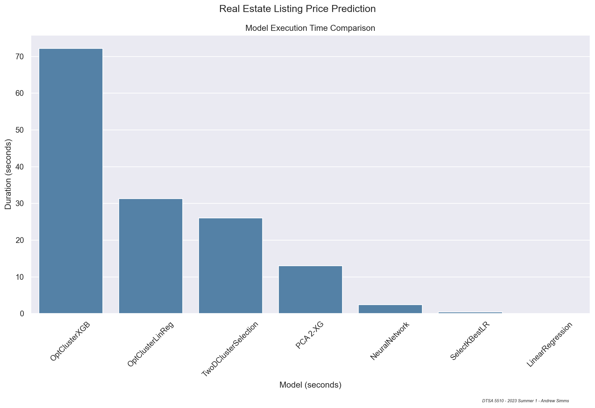

flowchart LR
A("Data Cleaning / Wrangling")
B("Imputation")
C("Feature Selection")
subgraph unsupervised ["Unsupervised ML"]
subgraph clustering ["Clustering"]
D("KMeans")
E("AgglomerativeClustering")
end
subgraph dimred ["Dimensionality Reduction"]
L("Principal Component Analysis")
end
end
subgraph supervised ["Supervised Regression"]
F("Linear Regression")
G(AdaBoostRegressor)
H(XGBRegressor)
end
J["Analysis"]
K["Selection"]
A --> B --> C
C --> unsupervised --> supervised --> J --> K
Unsupervised Real Estate Price Prediction - Final Report - Deliverable 2
DTSA 5510 Unsupervised Algorithms in Machine Learning - University of Colorado Boulder
Andrew Simms
2023-06-26
Problem Description
Modeling Process
Data Source & Description
flowchart TB
subgraph zillow ["Zillow.com"]
A["scraper.py"]
B["GetSearchPageState API"]
C["Zillow Listings"]
D["json"]
E["formatter.py"]
F["csv"]
end
A --> B --> C --> D --> E --> F
flowchart LR
F["Zillow"]
subgraph redfin ["Redfin.com"]
G["redfin_scraper.py"]
H["csv"]
end
K["Final Output"]
F --> G --> H --> K
| price | beds | baths | area | schools_rating | school_district | |
|---|---|---|---|---|---|---|
| 0 | $1,199,000 | 5.0 | 3.0 | 2464.0 | 7.4 | Boulder Valley Re 2 School District |
| 1 | $800,000 | 2.0 | 3.0 | 4218.0 | 6.3 | Jefferson County R-1 School District |
| 2 | $970,000 | 4.0 | 4.0 | 2795.0 | 6.0 | Boulder Valley Re 2 School District |
| 3 | $1,150,000 | 3.0 | 3.0 | 2446.0 | 7.7 | Boulder Valley Re 2 School District |
| 4 | $1,150,000 | 5.0 | 3.0 | 3703.0 | 7.7 | Boulder Valley Re 2 School District |
| 5 | $2,600,000 | 5.0 | 4.0 | 3715.0 | 8.0 | Boulder Valley Re 2 School District |
| 6 | $675,000 | 3.0 | 2.0 | 1728.0 | 6.7 | Boulder Valley Re 2 School District |
| 7 | $1,649,700 | 5.0 | 4.0 | 3342.0 | 8.0 | Boulder Valley Re 2 School District |
| 8 | $1,369,000 | 3.0 | 3.0 | 2225.0 | 8.0 | Boulder Valley Re 2 School District |
| 9 | $850,000 | 4.0 | 3.0 | 2948.0 | 8.3 | Boulder Valley Re 2 School District |
| 10 | $679,000 | 3.0 | 2.0 | 1284.0 | 7.0 | Boulder Valley Re 2 School District |
| 11 | $1,225,000 | 3.0 | 2.0 | 1562.0 | 6.0 | Boulder Valley Re 2 School District |
| 12 | $699,000 | 2.0 | 2.0 | 2460.0 | 6.3 | Jefferson County R-1 School District |
| 13 | $1,195,000 | 3.0 | 3.0 | 2159.0 | 6.7 | Boulder Valley Re 2 School District |
| 14 | $3,900,000 | 4.0 | 3.0 | 2579.0 | 6.0 | Boulder Valley Re 2 School District |
| 15 | $1,350,000 | 4.0 | 2.0 | 2071.0 | 8.3 | Boulder Valley Re 2 School District |
| 16 | $1,625,000 | 5.0 | 6.0 | 5114.0 | 8.0 | Boulder Valley Re 2 School District |
| 17 | $1,250,000 | 4.0 | 4.0 | 3262.0 | 7.7 | Boulder Valley Re 2 School District |
| 18 | $675,000 | 2.0 | 2.0 | 2261.0 | NaN | NaN |
| 19 | $1,550,000 | 6.0 | 6.0 | 6383.0 | 8.4 | Boulder Valley Re 2 School District |
| 20 | $905,000 | 5.0 | 2.0 | 1900.0 | 7.4 | Boulder Valley Re 2 School District |
| 21 | $1,000,000 | 3.0 | 3.0 | 1873.0 | NaN | NaN |
| 22 | $11,900,000 | 7.0 | 13.0 | 16612.0 | 7.0 | Boulder Valley Re 2 School District |
| 23 | $918,000 | 5.0 | 2.0 | 1882.0 | 8.4 | Boulder Valley Re 2 School District |
| 24 | $739,000 | 3.0 | 2.0 | 1000.0 | 8.4 | Boulder Valley Re 2 School District |
| 25 | $2,185,500 | 7.0 | 4.0 | 5363.0 | 7.4 | Boulder Valley Re 2 School District |
| 26 | $1,100,000 | 5.0 | 4.0 | 3253.0 | 6.0 | Boulder Valley Re 2 School District |
| 27 | $1,999,000 | 4.0 | 3.0 | 4443.0 | 7.4 | Boulder Valley Re 2 School District |
| 28 | $1,150,000 | 3.0 | 2.0 | 1253.0 | 7.0 | Boulder Valley Re 2 School District |
| 29 | $1,800,000 | 4.0 | 4.0 | 3915.0 | 8.0 | Boulder Valley Re 2 School District |
| 30 | $2,295,000 | 5.0 | 3.0 | 2882.0 | 9.3 | Boulder Valley Re 2 School District |
| 31 | $1,250,000 | 5.0 | 4.0 | 4041.0 | 6.0 | Boulder Valley Re 2 School District |
| 32 | $797,000 | 3.0 | 1.0 | 1050.0 | 8.4 | Boulder Valley Re 2 School District |
| 33 | $2,999,900 | 3.0 | 5.0 | 3025.0 | 6.0 | Boulder Valley Re 2 School District |
| 34 | $2,750,000 | 5.0 | 5.0 | 5352.0 | 7.4 | Boulder Valley Re 2 School District |
| 35 | $2,347,500 | 4.0 | 4.0 | 3108.0 | 9.3 | Boulder Valley Re 2 School District |
| 36 | $970,000 | 3.0 | 3.0 | 3289.0 | 8.0 | Boulder Valley Re 2 School District |
| 37 | $890,000 | 3.0 | 3.0 | 2838.0 | 8.0 | Boulder Valley Re 2 School District |
| 38 | $1,695,000 | 6.0 | 4.0 | 4217.0 | 7.0 | Boulder Valley Re 2 School District |
| 39 | $849,000 | 2.0 | 1.0 | 959.0 | 7.7 | Boulder Valley Re 2 School District |
Data Cleaning
- Striving for consistent input into models
- \(R^2\) comparison done with same data
- Remove columns with > 25% null values
- Remove highly collinear features
- Cleanup column names
- Only numerical features
- Categorical values narrowed down and converted with OHE
- For all models
- 80% Train
- 20% Test
- Same
DataFramepassed to all models:x_train,x_test,y_train,y_test

Feature Correlation Heatmap
- Many features
- Correlation between some features
- Need to watch out for collinearity
- Good starting point for building models

Exploratory Data Analysis


Feature Selection
Figure 9: Feature Selection Visualization
Modeling Goals
Explore Unsupervised -> Supervised combinations
Unsupervised:
- Principal Component Analysis
- Clustering
kMeansAgglomerativeClustering
Supervised:
- Linear Regression
XGBoost

Principal Component Analysis
- Unsupervised
- Reduce Dimensionality
- Supervised regression on result
class PCARegresson:
def __init__(self):
self.best_rsquared = 0
self.best_y_pred = None
self.best_i = None
self.best_model = None
def run(self):
for i in range(2, 30):
pca = PCA(n_components=i)
x_train_reduced = pca.fit_transform(x_train)
x_test_reduced = pca.transform(x_test)
linear_regression = LinearRegression()
linear_regression.fit(x_train_reduced, y_train)
y_pred = linear_regression.predict(x_test_reduced)
calc_r2_score = r2_score(y_pred, y_test)
if calc_r2_score > best_rsquared:
best_rsquared = calc_r2_score
best_y_pred = y_pred
best_i = i
best_model = "LR"
adaboost_model = AdaBoostRegressor(random_state=42, n_estimators=100).fit(
x_train_reduced, y_train
)
y_pred = adaboost_model.predict(x_test_reduced)
calc_r2_score = r2_score(y_pred, y_test)
if calc_r2_score > best_rsquared:
best_rsquared = calc_r2_score
best_y_pred = y_pred
best_i = i
best_model = "AB"
booster = "gbtree"
xgb_model = xgb.XGBRegressor(n_jobs=1, booster=booster).fit(x_train_reduced, y_train)
y_pred = xgb_model.predict(x_test_reduced)
calc_r2_score = r2_score(y_pred, y_test)
if calc_r2_score > best_rsquared:
best_rsquared = calc_r2_score
best_y_pred = y_pred
best_i = i
best_model = "XG"Feature Selection
- Unsupervised
SelectKBest- Output an optimized set of features
- Passed to Linear Regression
- Used for cluster building
best_rsquared = 0
best_features = None
best_y_pred = None
selected_features_list = []
for i in range(2, len(x_train.columns) - 1):
selector = SelectKBest(score_func=f_regression, k=i)
X_reduced = selector.fit_transform(x_train, y_train)
selected_features = pd.DataFrame(
selector.inverse_transform(X_reduced),
index=x_train.index,
columns=x_train.columns,
)
selected_columns = selected_features.columns[selected_features.var() != 0]
selected_features_list.append(list(selected_columns))
X_reduced = x_train[selected_columns]
linear_regression = LinearRegression()
linear_regression.fit(x_train[selected_columns], y_train)
y_pred = linear_regression.predict(x_test[selected_columns])
calc_r2_score = r2_score(y_pred, y_test)
if calc_r2_score > best_rsquared:
best_rsquared = calc_r2_score
best_features = selected_columns
best_y_pred = y_predCluster Selection
- Unsupervised
- Calculate silhouette score for cluster permutations
- Output best results in as dict
MIN_CLUSTERS = 2
MAX_CLUSTERS = 5
class ClusterFeatureSelector:
def __init__(
self,
input_df,
input_cols,
model,
min_clusters=MIN_CLUSTERS,
max_clusters=MAX_CLUSTERS,
):
cluster_cols = input_cols.copy()
cluster_cols.remove("price")
cluster_cols.remove("zestimate")
cluster_cols.remove("beds")
cluster_cols.remove("baths")
self.cluster_features = cluster_cols
self.input_df = input_df
self.model = model
self.min_clusters = min_clusters
self.max_clusters = max_clusters
def build_by_dimension(self, dimension):
best_cluster_features = {}
feature_combinations = list(
itertools.combinations(self.cluster_features, dimension)
)
for feature_combo in feature_combinations:
input_df = self.input_df.copy()
cluster_input_list = list([input_df[i].to_numpy() for i in feature_combo])
cluster_input = np.dstack(cluster_input_list)[0]
for i in range(self.min_clusters, self.max_clusters + 1):
cluster_model = copy.copy(self.model)
cluster_model.n_clusters = i
cluster_model.fit(cluster_input)
this_score = silhouette_score(cluster_input, cluster_model.labels_)
if i not in best_cluster_features:
best_cluster_features[i] = {"sil_score": 0, "features": None}
if this_score > best_cluster_features[i]["sil_score"]:
best_cluster_features[i]["sil_score"] = this_score
best_cluster_features[i]["features"] = feature_combo
return best_cluster_features
start = time.time()
clusterFeatureSelector = ClusterFeatureSelector(df, float_cols, KMeans(init="k-means++", n_init=20, random_state=42))
two_d_cluster_features = clusterFeatureSelector.build_by_dimension(2)
execution_times["TwoDClusterSelection"] = {"duration": time.time() - start}Regression Using Clusters
ClusterRegression- Cluster data then regress on clusters
- Many choices for clusters and regression features
- Use preselected regression features and cluster features
Best:
Regression: ['beds', 'baths', 'latitude', 'longitude', 'livingArea', 'taxAssessedValue', 'schoolsRating', 'yearRenovated', 'totalSqFt', 'lotSqFt', 'taxableLandValue', 'taxableImprovementValue', 'groundFloorSquareFeet', 'garageParkingSquareFeet', 'heatingTypeCode_Hot Water', 'heatingTypeCode_Radiant', 'buildingQualityCode_Average', 'buildingQualityCode_Excellent', 'buildingQualityCode_Fair', 'buildingQualityCode_Good', 'garageCode_Basement']
Cluster: ('longitude', 'lotSqFt')
n_clusters: 3class ClusterRegression:
def __init__(
self,
train,
test,
target,
cluster_model,
regression_model,
min_clusters=MIN_CLUSTERS,
max_clusters=MAX_CLUSTERS,
):
self.train = train
self.test = test
self.target = target
self.cluster_model = cluster_model
self.regression_model = regression_model
self.min_clusters = min_clusters
self.max_clusters = max_clusters
self.best_rsquared = 0
self.best_regression_features = None
self.best_cluster_features = None
self.best_n_clusters = None
self.best_pred = None
def find_optimal_cluster(self, regression_features, cluster_features):
train_df = self.train.copy()
test_df = self.test.copy()
for regression_feat_cols in regression_features:
for cluster_num in cluster_features.keys():
this_regression_features = regression_feat_cols
this_cluster_features = cluster_features[cluster_num]["features"]
n_clusters = cluster_num
train_cluster_input_list = list([train_df[i].to_numpy() for i in this_cluster_features])
test_cluster_input_list = list([test_df[i].to_numpy() for i in this_cluster_features])
train_cluster_input = np.dstack(train_cluster_input_list)[0]
test_cluster_input = np.dstack(test_cluster_input_list)[0]
this_train_df = train_df.copy()
this_test_df = test_df.copy()
cluster_model = copy.copy(self.cluster_model)
cluster_model.n_clusters = cluster_num
cluster_model.fit(train_cluster_input)
this_train_df["cluster_label"] = cluster_model.labels_
train_labels = cluster_model.labels_
test_labels = cluster_model.fit_predict(test_cluster_input)
this_test_df["cluster_label"] = test_labels
# Build test and train dataframes for each cluster
train_clusters = {label: pd.DataFrame() for label in train_labels}
for key in train_clusters.keys():
train_clusters[key] = this_train_df[:][this_train_df['cluster_label'] == key]
test_clusters = {label: pd.DataFrame() for label in test_labels}
for key in test_clusters.keys():
test_clusters[key] = this_test_df[:][this_test_df['cluster_label'] == key]
test_cluster_df_list = []
for key in train_clusters.keys():
train_cluster_df = train_clusters[key]
test_cluster_df = test_clusters[key]
regression_model = copy.copy(self.regression_model)
regression_model = self.regression_model.fit(train_cluster_df[this_regression_features], train_cluster_df[self.target])
cluster_y_pred = regression_model.predict(test_cluster_df[this_regression_features])
test_cluster_df["y_pred"] = cluster_y_pred
test_cluster_df_list.append(test_cluster_df)
pred_df = pd.concat(test_cluster_df_list)
pred_df = pred_df.sort_index()
test_pred = y_test.sort_index()
rsquared = r2_score(test_pred, pred_df['y_pred'])
if rsquared > self.best_rsquared:
self.best_rsquared = rsquared
self.best_regression_features = this_regression_features
self.best_cluster_features = this_cluster_features
self.best_n_clusters = cluster_num
self.best_pred = pred_df['y_pred']
print(f"Best:\n\tR2: {self.best_rsquared}\n\tRegression: {self.best_regression_features}\n\tCluster: {self.best_cluster_features}\n\tn_clusters: {self.best_n_clusters}")
print()
def get_best_rsquared(self):
return self.best_rsquared
def get_best_pred(self):
return self.best_pred
def get_best_features(self):
return self.best_features
def get_best_clusters(self):
return self.best_clusters
linear_cluster_regressor = ClusterRegression(all_train, all_test, target, KMeans(init="k-means++", n_init="auto", random_state=42), LinearRegression())
linear_cluster_regressor.find_optimal_cluster(selected_features_list, two_d_cluster_features)
y_pred_lcr = linear_cluster_regressor.get_best_pred()
Neural Network
- Tensorflow
- Naive Implementation
- Comparison
input_shape = x_train.shape[1]
# Scale the input data
scaler = StandardScaler()
x_train_scaled = scaler.fit_transform(x_train)
x_test_scaled = scaler.transform(x_test)
# Define the neural network architecture
model = tf.keras.Sequential([
tf.keras.layers.Dense(256, activation='relu', input_shape=(input_shape,)),
tf.keras.layers.Dense(256, activation='relu'),
tf.keras.layers.Dense(128, activation='relu'),
tf.keras.layers.Dense(64, activation='relu'),
tf.keras.layers.Dense(1)
])
# Define learning rate schedule
lr_schedule = tf.keras.optimizers.schedules.ExponentialDecay(
initial_learning_rate=0.01,
decay_steps=1000,
decay_rate=0.9
)
optimizer = tf.keras.optimizers.Adam(learning_rate=lr_schedule)
# Compile the model
model.compile(optimizer=optimizer, loss='mean_squared_error')
# Train the model with early stopping and reduced learning rate
early_stopping = tf.keras.callbacks.EarlyStopping(patience=5, restore_best_weights=True)
reduce_lr = tf.keras.callbacks.ReduceLROnPlateau(factor=0.1, patience=3)
model.fit(x_train_scaled, y_train, epochs=50, batch_size=32, verbose=0,
validation_data=(x_test_scaled, y_test),
callbacks=[early_stopping, reduce_lr])
# Make predictions on x_test
y_pred = model.predict(x_test_scaled)Model Accuracy Results & Analysis
Figure 11: Model Accuracy \(R^2\)
Model Accuracy Results & Analysis
Figure 12: Model Accuracy RMSE
Model Execution Time Results & Analysis
Figure 13: Model Execution Time
Conclusion
- Relatively accurate pricing model is possible
- Unsupervised and supervised algorithms can work together
- Execution times increase with model input complexity
- Accuracy vs. Execution Time
- Further research is needed to explore hyperparameter tuning
- Thank You!

Final Report - Deliverable 2 - DTSA 5510